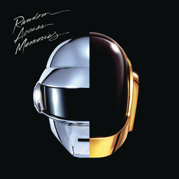

My Favorite Albums of All Time
Welcome to My Musical Universe 🎸
A personal archive of the albums that shaped my sound.
From the soaring solos of classic rock to the crushing riffs of metal, this site is a tribute to the records that have left a permanent mark on my ears—and my guitar. I’m a listener, a player, and a lifelong explorer of powerful, emotional, and genre-defying music.
This collection isn’t just a list. It’s a journey through iconic albums, hidden gems, and timeless productions across:
- Classic Rock — the legends that started it all
- Progressive Rock & Metal — the technical and the transcendental
- Heavy Metal — raw energy, riff worship, and distortion dreams
- Electronic & Rap — when I need a beat-driven change of pace
Below is a list of all the albums I have listened and relisted to along my musical journey, and my favorite picks from each genre are listed in their respective pages.
Album Archives
Take Me Back To Eden - Sleep Token

This Place Will Become Your Tomb - Sleep Token
Sundowning - Sleep Token
One - Sleep Token
Two - Sleep Token


Even In Arcadia - Sleep Token
Ok Computer - Radiohead


In Rainbows - Radiohead
The Bends - Radiohead

Kid A - Radiohead
The Dark Side of The Moon - Pink Floyd

The Wall - Pink Floyd
Wish You Were Here - Pink Floyd


Master of Puppets - Metallica
Black Album - Metallica


Ride The Lightning - Metallica
Nevermind - Nirvana


Led Zeppelin IV - Led Zeppelin
Random Access Memories - Daft Punk

Discovery - Daft Punk
Magma - Gojira

From Mars to Sirius - Gojira
White Pony - Deftones
Ten - Pearl Jam
Abbey Road - The Beatles


Rumours - Fleetwood Mac
Appetite For Destruction - Guns 'n Roses


Blue Album - Weezer
AM - Arctic Monkeys


Currents - Tame Impala
Mellon Collie and the Infinite Sadness - The Smashing Pumpkins


Black Holes and Revelations - Muse
Chromakopia - Tyler, The Creator


gnx - Kendrick Lamar
Blonde - Frank Ocean

loveless - my bloody valentine
Rage Against The Machine - Rage Against The Machine


THE DEATH OF PEACE OF MIND - Bad Omens
In the Aeroplane Over the Sea - Neutral Milk Hotel

The Sky, The Earth & All Between - Architects